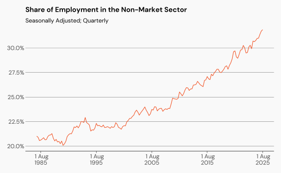
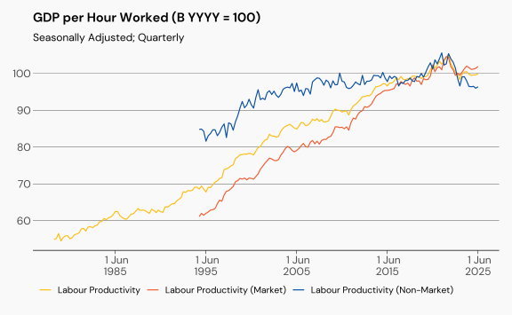
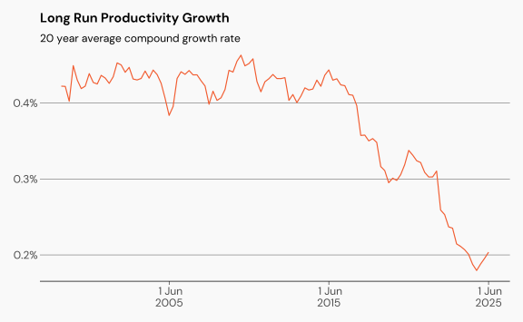
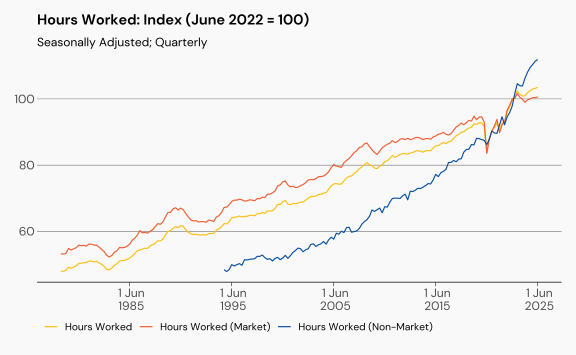
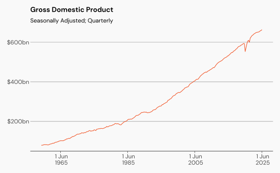
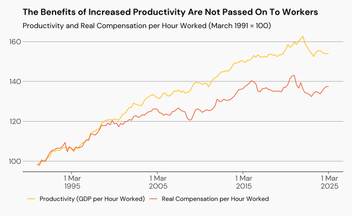

Productivity
Productivity is a widely reported but commonly misunderstood economic indicator. People, especially bosses, economists, and industry groups like to talk about it, but don’t seem to understand what it is. In a Fair Work Commission (FWC) hearing in 2025, the chief economist of the Australian Chamber of Commerce and Industry was asked what factors drove productivity and said:
“the Productivity Commission was currently examining those factors”
You would hope that after 35 years of existence, the productivity commission already knew what factors drive productivity.
The conversation also fails to consider who benefits from increases to productivity.
Andrew McKellar, Chief Executive Officer, Australian Chamber of Commerce and Industry
From a business point of view, we’re very happy to sit down and work with the trade union movement. But we want to get a strategy that’s built around how we improve productivity.
[…] unions need to moderate their wage claims, and offer measures to improve labour productivity.
Decisions which impact productivity in the workplace are made by management, not by workers.
This article describes how productivity is measured and provides an overview of the drivers of productivity, and more importantly, who in the workplace is responsible for implementing those drivers.
Defining Productivity
Productivity is about quantities, not costs. It is the rate at which we produce goods or services per unit of input. Think: how many workers does it take to make a widget?
Productivity is also about technological progress. If a new technology enables the production of the same number of goods in fewer hours, that increases productivity.
Workers do not often get to make decisions about technology in their workplace. These are decisions made by management. It is also important to recognise that changes to GDP or GVA can occur even without changes to input.
Labour Productivity
Labour productivity is measured by Gross Domestic Product (GDP) per hour worked. At the industry level, it is measured by Gross Value Added (GVA) per hour worked. This is relatively easy to measure and describe.
Multi-Factor Productivity
Because capital is also an input into production, there is also an estimate called multi-factor productivity. This is more difficult to measure, and even more difficult to describe.
Because labour power is the work which adds value, we will focus only on labour productivity.
The Market and the Non-Market
Productivity is measured across the industries that make up the economy. These industries can be described as market and non-market sectors. The market sector includes industries that produce goods and services which are sold at market prices. That means the price is reflective of the demand. The non-market sector covers education and training, health care and social assistance, and public administration and safety. Employment growth has been much faster in the non-market sector, as shown in Figure 1 below.
Estimates of productivity in the non-market sector should be interpreted with caution. What is the unit of output that is being measured? For the education sector, output might be the number of students who graduate. In that case, measured productivity would increase by reducing the number of teachers - but that would reduce the quality of education and result in worse outcomes for society.
Trends in Productivity
Productivity across the market and non-market sectors, as well as the total productivity across the Australian economy, is shown in Figure 2. Productivity growth began to slow from from 2015, although the pandemic created a productivity bubble. Recent declines in productivity growth may simply be a return to normal.

The 20-year average of productivity growth confirms this trend, as shown in Figure 3.

Because productivity is measured as GDP per hour worked, it is important to look at what is happening with measures of GDP and hours worked.
Trends in Hours Worked
Figure 4 shows the long run trend for hours worked in the market and non-market sectors, and aggregated across the economy. There is a clear increase in the growth of hours worked across all sectors of the economy, but especially in the non-market sector. In fact the growth of hours worked in the non-market sector has been three times faster since Covid than before.
Increasing hours worked is a drag on productivity. One of the main reasons that people choose to work more hours is that their wage is not sufficient to meet their material needs.

Trends in GDP
On the other side of the equation is GDP, with the long run trend shown in Figure 5. While the long run growth prior to the pandemic was slightly stronger than over the past five years, in comparison to hours worked, the impact on productivity is minimal.

Productivity and Wages
If productivity is a measure of output per hour, it would only be fair to compare that with how much compensation (in real terms) workers are getting per hour. The relationship between labour productivity and real compensation for workers per hour is shown in Figure 6. It shows that the benefits of increased productivity have not been passed on to workers since about 2000. The attempts by industry groups and the Reserve Bank to now tie future wage increases to productivity growth is an attempt at locking in the gains made by business owners at workers expense.

Productivity in the Workplace
Productivity in the workplace is influenced by decisions that are made by management - not decisions that are made by workers. Investment in physical capital, like tools and machines, new technologies, and investment decisions are made by management. These decisions directly impact productivity. Well maintained modern machinery which is well maintained, will improve the workers output.
Worker health is another important determinant of productivity. A healthy workforce is a more productive workforce. This includes sufficient rest between and within a shift, as well as sufficient time off for leisure. While workers have some control over their own health, sufficient time off to rest and recover is dependent on whether wages provide a minimum standard of living. If wages aren’t high enough, workers are forced to work overtime, take extra shifts, or pick up a second job to survive. All at the expense of leisure and rest time.
There are other determinants of worker health that are not controlled by individual workers, such as the maintenance of a safe workplace - both physically and psychosocially.
A skilled workforce is a more productive workforce. But the ability to undertake training is also dependent on wages or other decisions of management. Workers should not be required to use their leave - paid or otherwise - to undertake training. Especially if there is no likelihood of increased pay in recognition of that training. The labour market in Australia is highly concentrated and workers are already underpaid relative to their skills.
So, when they say it is up to the worker to offer improvements to labour productivity, it is important to remember that productivity in the workplace is shaped by the choices companies make. As workers, our offer for improvements to labour productivity should always include increased wages and greater control over our work and the decisions made about it.